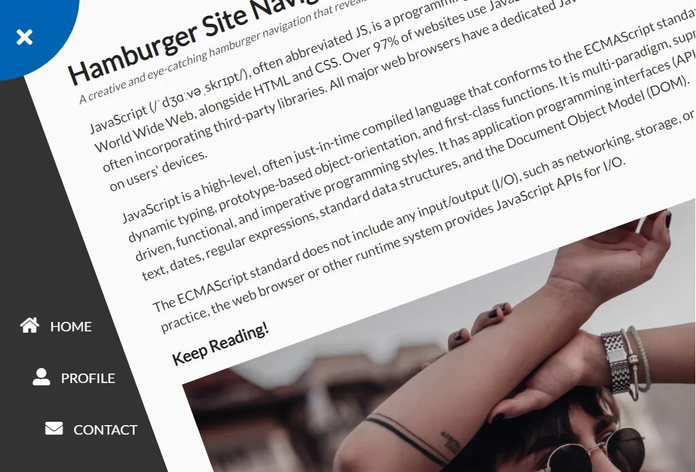
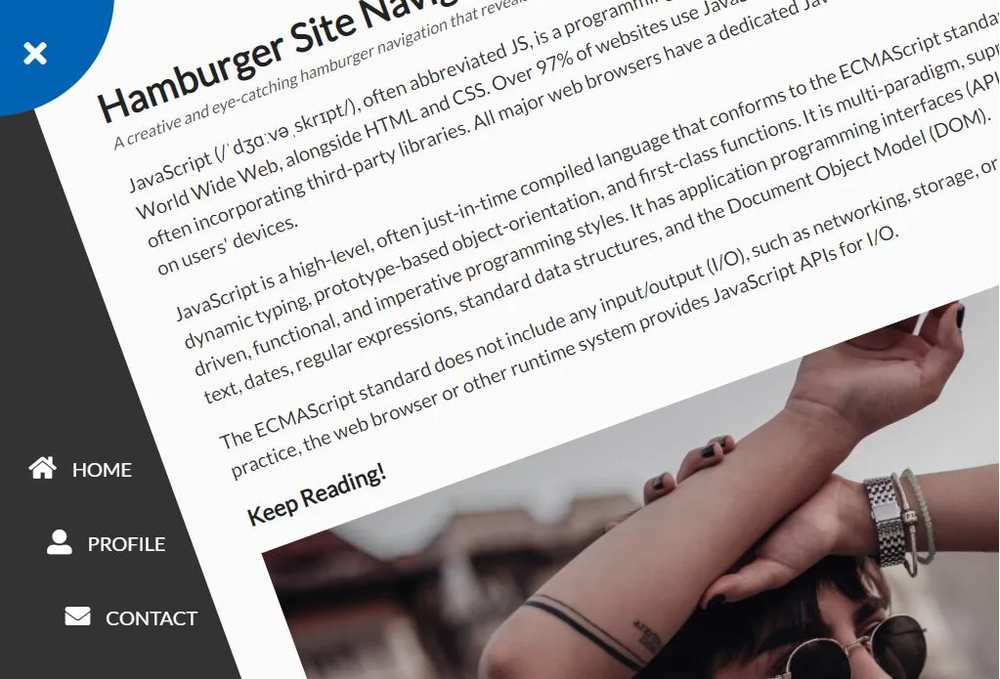

Rotating Navigation
Designed by: Abhijit GadakhA creative and eye-catching navigation that reveals a sidebar menu by rotating the main content of the page.
A creative and eye-catching navigation that reveals a sidebar menu by rotating the main content of the page.
